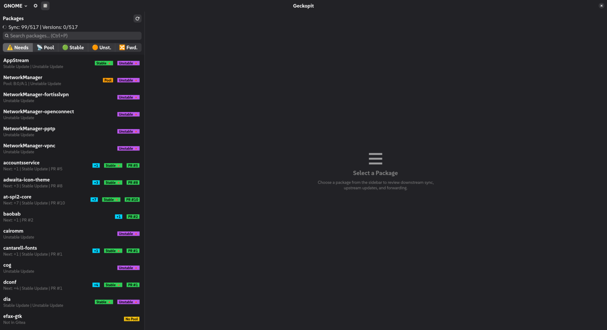
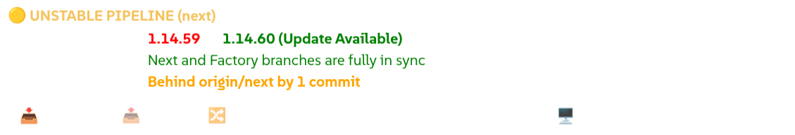
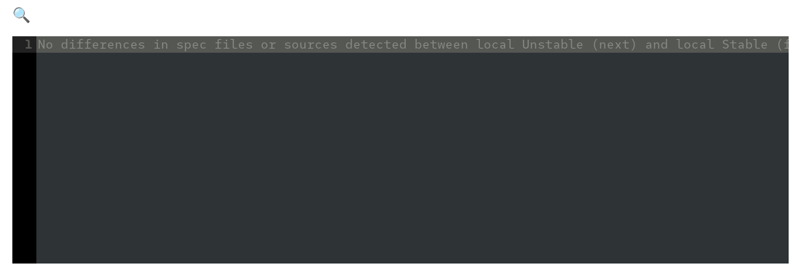
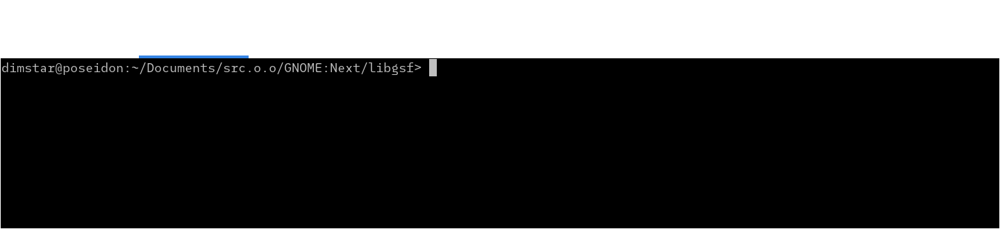
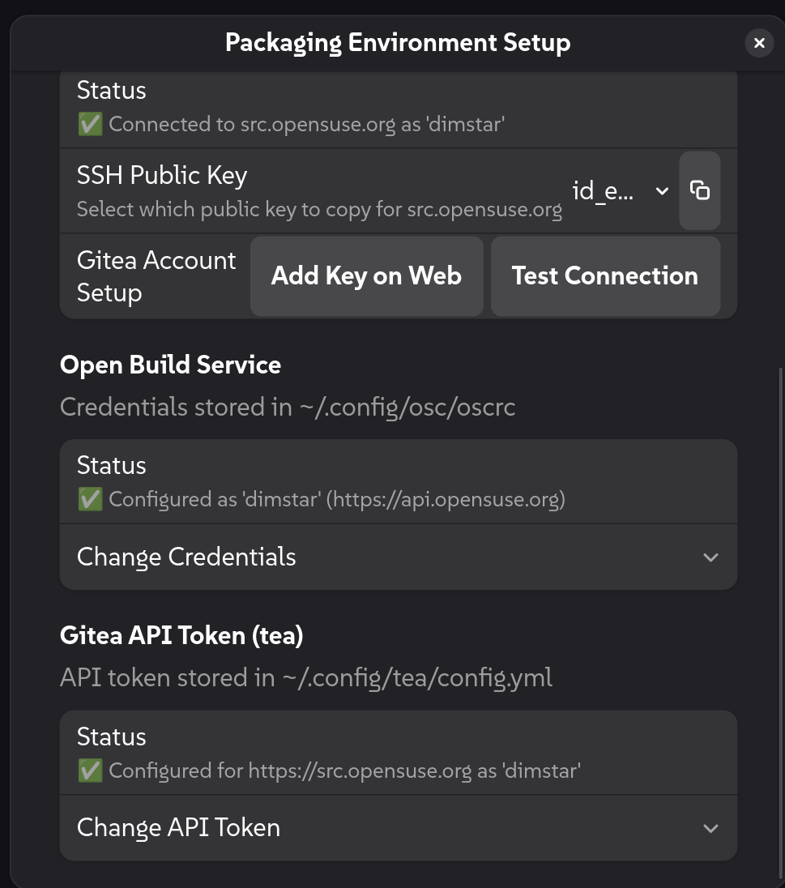

Welcome to the Geckopit User Guide. Geckopit is a graphical cockpit and command-line tool for openSUSE packagers maintaining multi-branch upstream repositories (such as GNOME:Factory and GNOME:Next).
This guide is organized by packaging tasks. Each section provides dedicated, step-by-step instructions for both the Desktop Cockpit (GUI) and the Terminal Suite (CLI).
💡 First time packaging on this machine? See the Appendix: Packaging Environment Setup & Onboarding to verify or configure Git identity, SSH keys, OBS, and Gitea in under a minute.
Geckopit provides two complementary interfaces:
* Cockpit GUI (geckopit): A responsive desktop application with real-time multi-branch tracking, embedded terminal tabs, 1-click update/merge/PR actions, and syntax-highlighted code diffing.
* Terminal CLI (geckopit-cli): A fast command-line suite for single-package inspection, batch audits, headless upgrades, and whitespace-sanitized commits.

The Cockpit is organized into four main functional regions:
1. HeaderBar: Switch workspace profiles, run background multi-workspace sync, and adjust preferences.
2. Package Master Sidebar: Search bar, linked filter toolbar, and real-time package list with status badges.
3. Detail Workspace: Dual pipeline cards (Stable and Unstable), inline Meson drift repair, and code-diff viewer.
4. Embedded Console Drawer: Multi-tab terminal drawer with draggable tabs, font zooming, and auto-scroll pause.
| Badge | Meaning | Action Recommended |
|---|---|---|
Local -N |
Local checkout is behind origin by N commits. |
Fast-forward pull from origin. |
Local +N |
Local checkout has unpushed commits on disk. | Push commits to origin. |
Update Av. |
Upstream has released a newer version on release-monitoring.org. | Run package upgrade. |
Fwd. |
Developmental commits on next ready to promote to factory. |
Review diff and create PR. |
Pool Ahead |
Local Factory has commits waiting to be submitted to Gitea pool. | Run pool submission. |
Pool Behind |
Central Gitea pool has updates that need to be pulled down. | Pull down pool updates into Factory. |
No Pool |
Package is not hosted in central Gitea pool. | Informational (suppressed from default sync table). |
Conflict |
Automated sync encountered git merge conflicts. | Resolve in console drawer shell. |
The linked toolbar at the top of the sidebar lets you switch between focused work queues and full catalog browsing:
⚠️ Needs ON — Default):📡 Pool, 🟢 Stable, 🟠 Unst., 🔀 Fwd.) to narrow your work queue down to that specific task set (or their combined union).⚠️ Needs OFF):⚠️ Needs off switches the sidebar to browse all packages across the checkout tree.sensitive=False), and track shortcuts (Ctrl+2..Ctrl+5) are ignored.⚠️ Needs back on.Ctrl + Alt and right-click directly on the version label in the Unstable Pipeline card.🚫 Ignore Version {Version}. The package will slide out of your filtered sidebar list. (Repeat and click 🔄 Unignore to restore).Run high-throughput parallel batch audits across all packages in your workspace:
# Default audit: Shows only packages requiring action (hides up-to-date and non-pool items)
geckopit-cli
# Upstream release monitor: Query release-monitoring.org for new stable and unstable versions
geckopit-cli -v
# Forwarding audit: List next branches with commits ready to merge to factory
geckopit-cli -f
# Gitea pool presence audit: List packages not registered in the central Gitea pool
geckopit-cli --not-in-pool
# Include packages not in central pool in the main downstream sync table
geckopit-cli --include-not-in-pool
# Comprehensive single-package dashboard (run inside package checkout or pass directory)
geckopit-cli zenity
# Verify maintainer environment readiness (Git identity, SSH keys, OBS, and Gitea)
geckopit-cli --check-setup
# Interactively configure missing developer credentials and keys
geckopit-cli --setup
When an upstream project releases a new version, Geckopit automates the entire upgrade:
fetching new sources ➔ bumping the version in .spec ➔ extracting upstream release notes ➔ wrapping changelog bullets at standard 67 columns ➔ dropping merged patches ➔ checking for Meson dependency bumps.
Geckopit automatically adapts to how the package is maintained:
* Service-managed packages (_service): Fetches upstream Git commits, drops merged patches, and updates packaging metadata.
* Direct tarball packages (.spec): Reads downloaded source archives, extracts changelogs, and updates spec files.

Update Av. badge (e.g. zenity or libgsf).4.2.0 ➔ 4.2.2).Update Next to 4.2.2 or Update Factory to 4.2.2)..changes entry at 67 columns, and dropping merged patches.Up-To-Date and illuminates the Push button.Push to push your packaging commits to origin.Run geckopit-cli --upgrade directly inside the package directory:
# Upgrade package to target revision (default: @PARENT_TAG@)
geckopit-cli --upgrade 4.2.2
# Or simulate the entire upgrade without modifying any files (dry-run)
geckopit-cli --upgrade 4.2.2 --dry-run
Upstream projects often bump minimum dependency constraints in meson.build, CMakeLists.txt, configure.ac, or pyproject.toml without maintainers noticing. Geckopit inspects the .spec file to identify active build systems (supporting declarative BuildSystem: tags, build invocation macros, %pyproject_wheel, and BuildRequires), and audits upstream declarations against your .spec BuildRequires: (including %{python_module ...}).
text
⚠️ Meson Drift: 1 unversioned [🔧 Fix in .spec]🔧 Fix in .spec.BuildRequires: declaration in the .spec file (or updates the corresponding %define macro if defined), appends the standard changelog entry (- Update version dependencies according to meson.build.), and refreshes the view.Audit and fix dependencies directly from your shell:
# Audit dependencies against .spec BuildRequires
geckopit-cli --audit-deps
# Automatically update .spec BuildRequires / %define macros and record changelog
geckopit-cli --fix-deps
Sample Output (--audit-deps):
=> Auditing Meson dependencies for 'zenity'...
⚠️ Meson Dependency Drift Detected:
• pkgconfig(libadwaita-1) >= 1.2 (spec currently has unversioned BuildRequires)
💡 Recommended Action: Update BuildRequires in zenity.spec to match upstream requirements.
During development cycles, maintainers test pre-releases on next before promoting them to factory.

🔀 Fwd. track filter (or press Ctrl+5).Ahead by 1 commits).next and factory.edit-copy-symbolic (📋 Copy) icon in the diff header to copy the raw Git patch directly to your clipboard, confirmed by a floating toast notification.Create Pull Request on the Pipeline card:Update to version 4.2.2) and extracts the newly added .changes entries directly into the PR description body.Submit Pull Request to publish the PR on Gitea.Audit forwardable branches and pull request states:
# List all checkouts with developmental commits on next ahead of factory
geckopit-cli --forward
# Include active Gitea pull request status
geckopit-cli --forward --pr
# Only display packages ready for forward that do NOT yet have an active PR
geckopit-cli --forward --no-pr
Maintainers routinely review and incorporate contributions from external submitters or check open PR status across their workspace:
# List open PRs for the current package (or workspace-wide overview from the root)
geckopit-cli --list-prs
# List open PRs for a specific package from anywhere
geckopit-cli webkitgtk --list-prs
# Fetch and merge a contributor PR onto your active branch HEAD
geckopit-cli --merge-pr 24
# Merge and squash multi-commit PRs into a single atomic commit
geckopit-cli --merge-pr 24 --squash
# Stage PR changes without auto-committing (for review or manual touch-ups)
geckopit-cli --merge-pr 24 --no-commit
Key PR Merge Capabilities:
* Direct Origin Fetch: Fetches pull/<ID>/head directly from origin without needing contributor fork URLs or commit SHAs.
* Smart Changelog Redating: Automatically places the contributor's changelog entry at the top of .changes, redates it to the current time, and preserves contributor authorship.
* Spec Collision Guard: Scans .spec files for duplicate Patch<N>: numbers (e.g. conflicting Patch2: additions) and safely halts before committing, leaving changes staged for maintainer review with git commit -c FETCH_HEAD.
* Forwarded PR & Group Intelligence: --list-prs queries _ObsPrj to report whether a package PR is forwarded individually or bundled into a multi-package release group (e.g. pr-manage combine).
Synchronize your local workspace trees with remote tracking branches across all profile checkouts.

🔄 Sync Workspace button in the HeaderBar.✅ Synced 12 package(s): glib2, gtk4, gvfs, mutter...✅ Workspace is already up to date⚠️ Workspace sync encountered warnings or conflicts (glib2, gtk4)Run workspace synchronization from the command line:
# Parallel fast-forward workspace synchronization
geckopit-cli --sync
# Fetch remote objects only without merging
geckopit-cli --fetch
Geckopit includes a modernized packaging commit helper (replacing legacy gc.sh). It ensures clean Git history by sanitizing trailing whitespace and preventing review artifacts from being accidentally committed.
🖥️ Terminal (factory): Launches an embedded console drawer tab navigated to the package's local stable worktree.🖥️ Terminal (next): Launches an embedded console drawer tab navigated to the package's local unstable worktree.Run geckopit-cli --commit inside any package directory:
# Stages packaging files, strips trailing whitespace, and pre-fills $EDITOR with .changes diff
geckopit-cli --commit
# Commit without opening an interactive editor (uses .changes diff directly)
geckopit-cli --commit --no-edit
Defensive Protections:
* Automatically strips trailing whitespace from modified .spec, .changes, and packaging files before staging.
* Stages only packaging files and source services, ignoring untracked build artifacts, cloned upstream directories, and temporary review logs.
* Extracts newly added entries from *.changes and pre-populates your $EDITOR commit template.
Power users never need to reach for the mouse. Geckopit provides full keyboard control with defensive input guards:
| Shortcut | Action | Scope / Context |
|---|---|---|
/ or Ctrl + P |
Focus the package search entry | Anywhere in Cockpit |
Enter or Down |
Confirm search and select first matching package | Inside search entry |
j or Down |
Step to the next package in the list | Package list navigation |
k or Up |
Step to the previous package in the list | Package list navigation |
Ctrl + 1 |
Toggle Action Queue vs. Catalog Browse mode | Sidebar toolbar |
Ctrl + 2 |
Toggle 📡 Pool Sync track filter | Action Queue mode |
Ctrl + 3 |
Toggle 🟢 Stable Updates track filter | Action Queue mode |
Ctrl + 4 |
Toggle 🟠 Unstable Updates track filter | Action Queue mode |
Ctrl + 5 |
Toggle 🔀 Forwarding track filter | Action Queue mode |
Ctrl + F |
Activate inline search inside the diff viewer | When viewing diffs |
Ctrl + + / - / 0 |
Zoom console terminal font (with floating % badge) |
In terminal drawer |
F5 or Ctrl + R |
Refresh currently selected package (instant priority scan) | Active package |
Ctrl + Shift + R |
Rescan all packages in the workspace | Global |
Ctrl + Shift + S |
Fetch & Sync workspace (git-project-sync) |
Global |
F1 |
Open User Guide in browser | Anywhere in Cockpit |
Note: Defensive input guards prevent shortcuts from intercepting keystrokes while you are actively typing inside an embedded terminal shell or text field.
When setting up Geckopit on a new machine, laptop, or Flatpak installation, four developer pillars must be configured to fetch sources, manage pull requests, and commit changes:
1. Git Identity: Your user.name and user.email used in commit headers.
2. SSH Authentication: An SSH keypair and authenticated connection to gitea@src.opensuse.org.
3. Open Build Service (OBS): Your openSUSE credentials in ~/.config/osc/oscrc.
4. Gitea CLI (tea): An API token configured in ~/.config/tea/config.yml.
Click the Setup & Verification button (avatar-default-symbolic) on the right side of the HeaderBar to open the interactive setup assistant:

src.opensuse.org/user/settings/keys in your browser and paste the key.gitea@src.opensuse.org without freezing the interface.~/.config/osc/oscrc with 0600 permissions.tea):src.opensuse.org/user/settings/applications.~/.config/tea/config.yml.Verify or configure your environment headlessly or step-by-step from your terminal:
# 1. Non-destructive readiness check across all 4 pillars
geckopit-cli --check-setup
# 2. Interactive step-by-step onboarding wizard
geckopit-cli --setup
The interactive wizard tests existing settings, offers to generate keys and configurations, displays clickable web links, and automatically validates connections before concluding.
For technical architecture, command-line reference, and helper internals, see MAINTAINERS_GUIDE.md.